01
Nettoyage automobile
Detailing intérieur & extérieur à domicile, dès 49 €. Aspiration, shampoing, plastiques et vitres — votre voiture comme neuve.
Réserver cette prestationComme neuf. Sans effort.
Automobile, textile, bateau, avion, terrasse, locaux, bureau, fin de chantier. Un service de nettoyage à domicile, partout en Île-de-France, 7j/7.
Intérieur & extérieur, à domicile, dès 29 €. La brillance d'un service d'exception.
Voir la prestationUne cabine immaculée, digne des plus hauts standards de l'aviation d'affaires.
Voir la prestationCoque, pont et sellerie de votre bateau, sur la Seine comme en mer. Un éclat parfait.
Voir la prestation
Née d'une passion pour le travail bien fait, MathClean est votre entreprise de nettoyage à Paris et en Île-de-France. Nous redonnons tout leur éclat à vos canapés, matelas, tapis, véhicules, bateaux et espaces professionnels — directement chez vous, avec un savoir-faire haut de gamme.
Nos techniciens qualifiés se déplacent équipés d'un matériel professionnel et de produits sûrs pour votre famille comme pour vos animaux. Notre engagement : un résultat impeccable, un devis gratuit et transparent, et une exigence de roi à chaque intervention. C'est cette rigueur qui inspire confiance à des centaines de clients franciliens, 7j/7.
Des interventions réelles réalisées par MathClean chez nos clients professionnels. La différence parle d'elle-même.
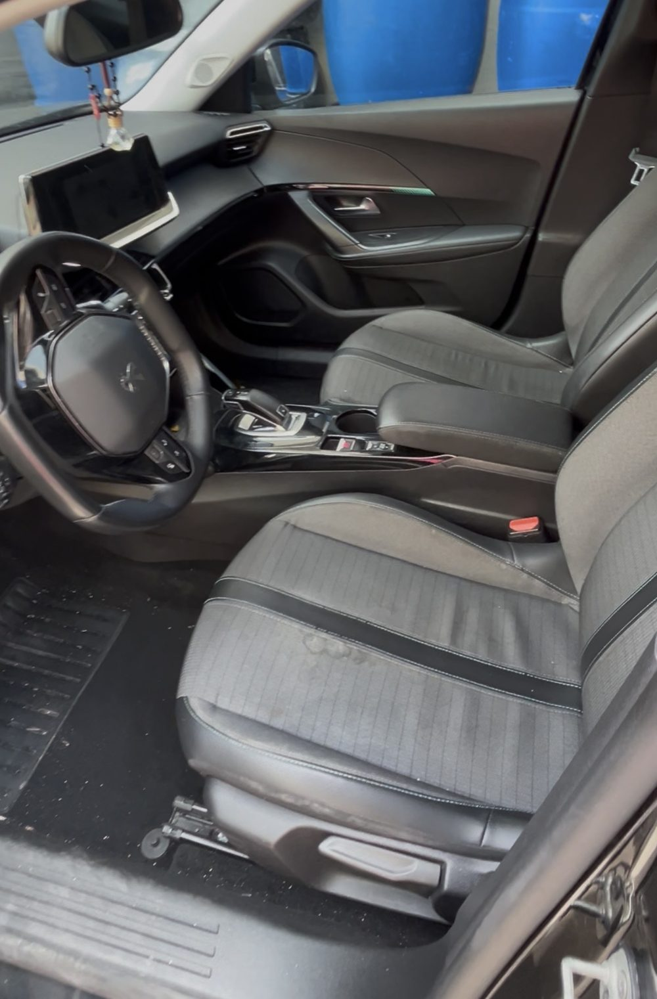


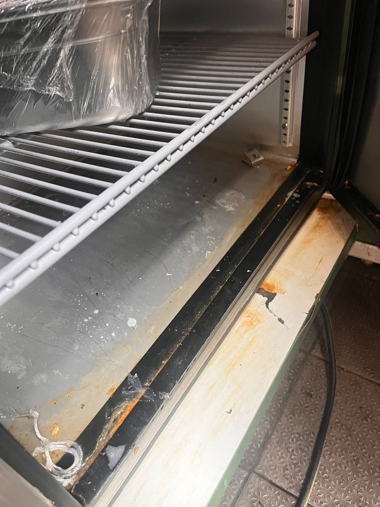

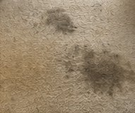
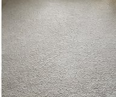
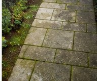
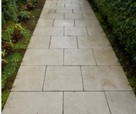
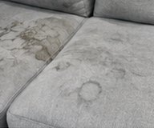
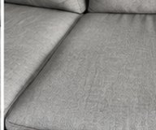
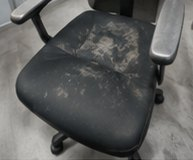
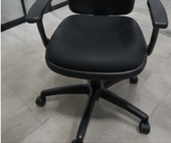
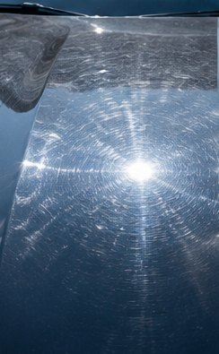
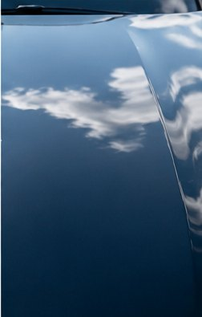
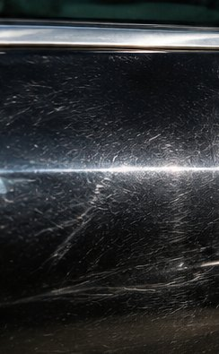
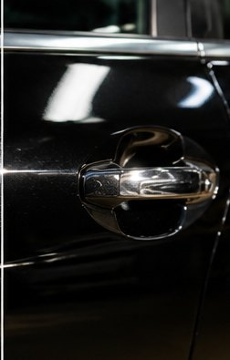
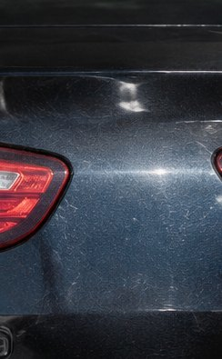
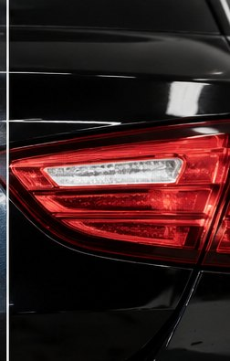
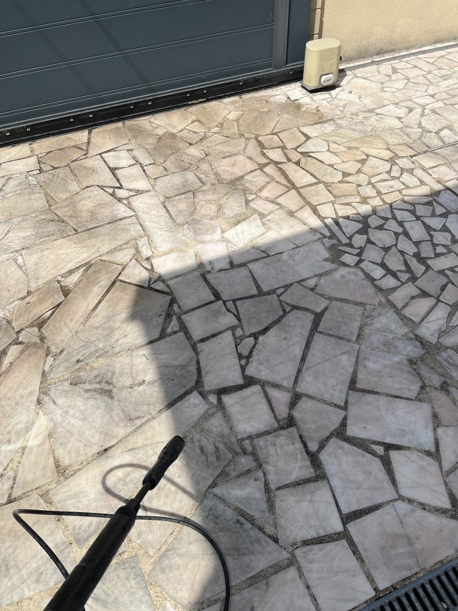
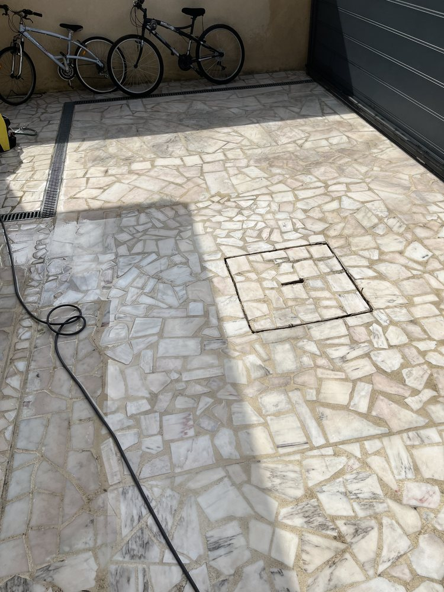

Un service de nettoyage fiable, transparent et réactif, partout à Paris et en Île-de-France.
Nous intervenons 7j/7 pour répondre à toutes vos urgences, avec des prestations rapides et efficaces, même le week-end et les jours fériés.
Nous vous proposons un devis gratuit et sans engagement : une estimation claire, rapide et personnalisée pour tous vos besoins de nettoyage.
Nous nous déplaçons dans les meilleurs délais pour assurer un nettoyage professionnel et soigné, à votre domicile comme sur votre lieu de travail.
Notre équipe est formée aux techniques professionnelles les plus efficaces et utilise du matériel et des produits éco-responsables de qualité.
Survolez une prestation pour la découvrir, puis réservez en un clic. Chaque service dispose aussi de sa page dédiée — nettoyage automobile, textile (canapé, matelas, tapis), bateau, bureaux et plus encore.
Detailing intérieur & extérieur à domicile, dès 49 €. Aspiration, shampoing, plastiques et vitres — votre voiture comme neuve.
Réserver cette prestationRéduction des micro-rayures et ravivage de la brillance : un éclat profond et une finition miroir, dès 300 €.
Réserver cette prestationCanapé, matelas, tapis et moquette : injection-extraction, détachage et traitement anti-acariens à domicile.
Réserver cette prestationCoque lustrée, pont lavé, sellerie nettoyée : votre bateau brille sur la Seine, la Marne et en mer.
Réserver cette prestationCabine, selleries cuir et cockpit de votre jet ou avion léger, nettoyés directement sur l'aérodrome.
Réserver cette prestationNettoyage haute pression, traitement anti-mousse et hydrofuge de vos terrasses, dalles et bois.
Réserver cette prestationEntretien professionnel de vos locaux commerciaux et bureaux : désinfection, moquettes et vitrerie, ponctuel ou régulier.
Réserver cette prestationDépoussiérage, évacuation des résidus, lavage des vitres et des sols. Votre bien prêt à vivre après travaux.
Réserver cette prestationMathClean réalise ses prestations de nettoyage à Paris et dans toute l'Île-de-France. Cliquez sur un département pour découvrir les villes couvertes.
Une exigence constante, reconnue par nos clients particuliers et professionnels.
« Mon canapé en tissu clair est comme neuf. Travail méticuleux et ponctuel, je recommande vivement. »
« Detailing complet de ma voiture à domicile. Résultat bluffant, intérieur impeccable. Service haut de gamme. »
« Nettoyage de fin de chantier rapide et soigné avant la livraison de notre appartement. Parfait. »
« Ponctuel, discret et d'un professionnalisme rare. Ma berline n'a jamais été aussi impeccable. »
« Matelas et tapis traités à domicile, résultat sans odeur et impeccable. Service haut de gamme. »
« Entretien de nos bureaux chaque semaine, toujours nickel. Une équipe sérieuse et de confiance. »
Votre avis sur Google nous aide énormément — et rassure les prochains clients. Merci pour votre confiance 🙏
Laisser un avis sur GoogleDes interventions réelles, du problème au résultat. Voici comment MathClean transforme concrètement les surfaces de ses clients.
Réponse rapide, devis gratuit et sans engagement.